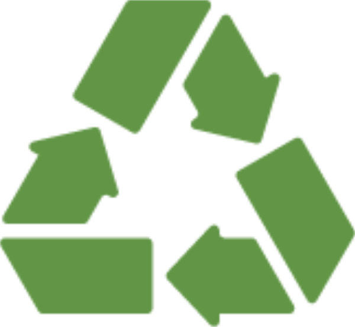

 Eco Fest |
|
RecyclingLearn more about the importance of recycling here: Or you can help support some of the charities listed below: https://www.greenpeace.org.uk/ https://www.wildlifetrusts.org/ http://www.keepbritaintidy.org/ http://www.energysavingtrust.org.uk/ |
|